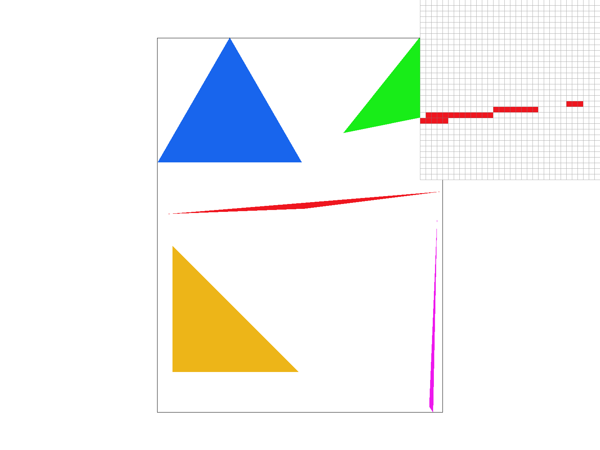
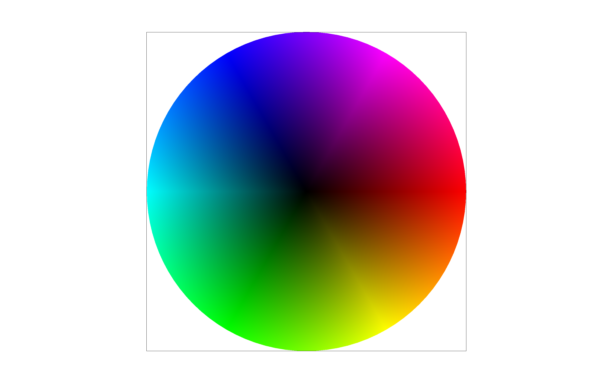
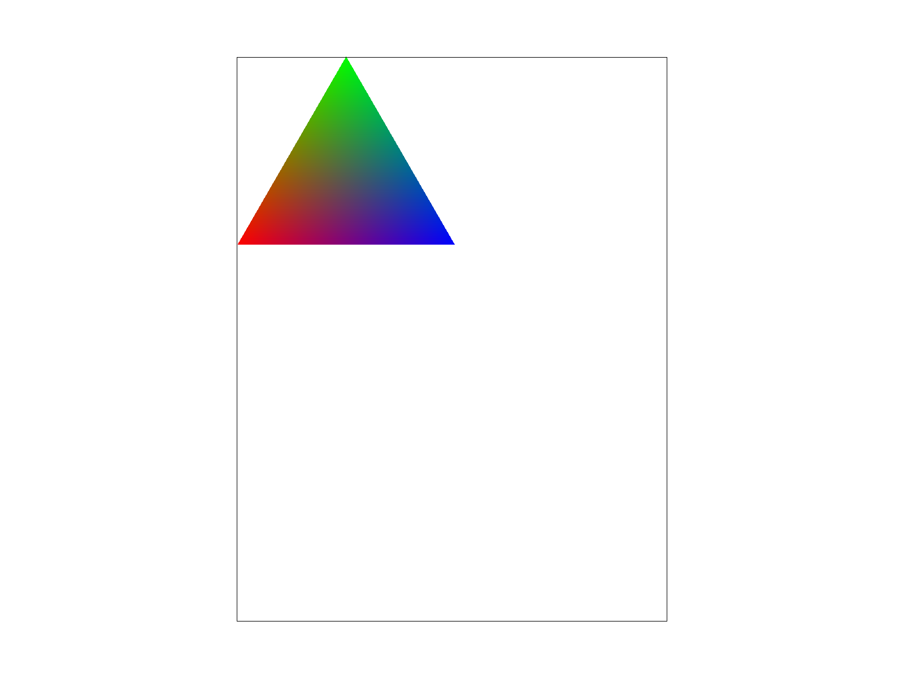
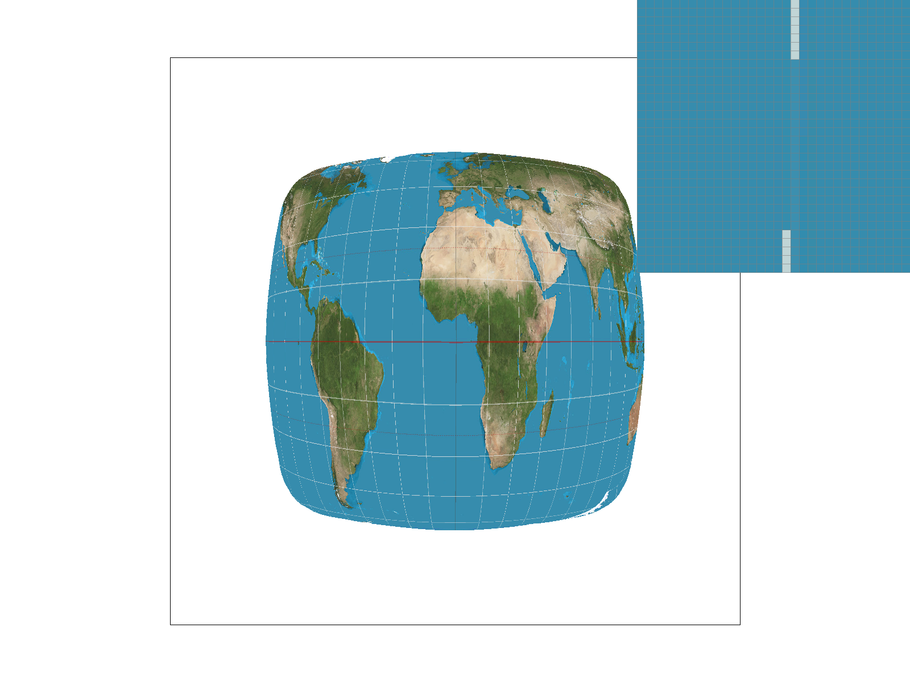
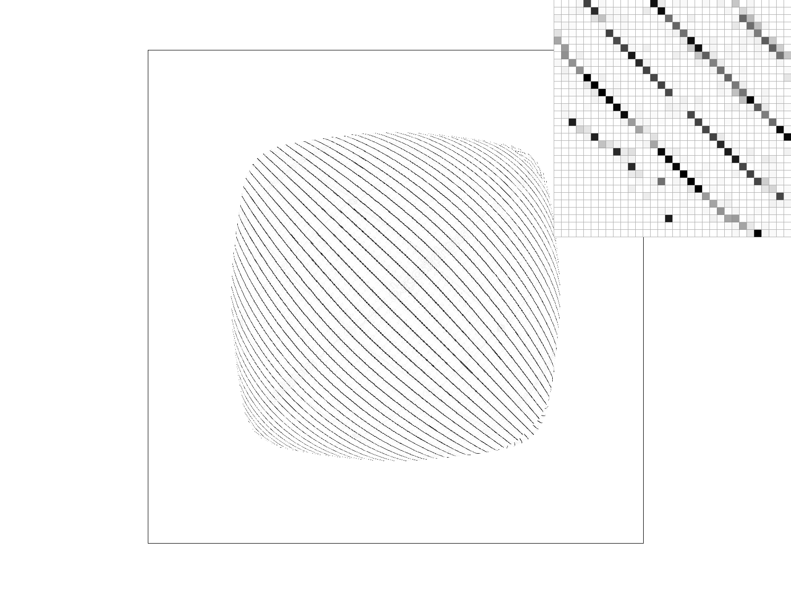
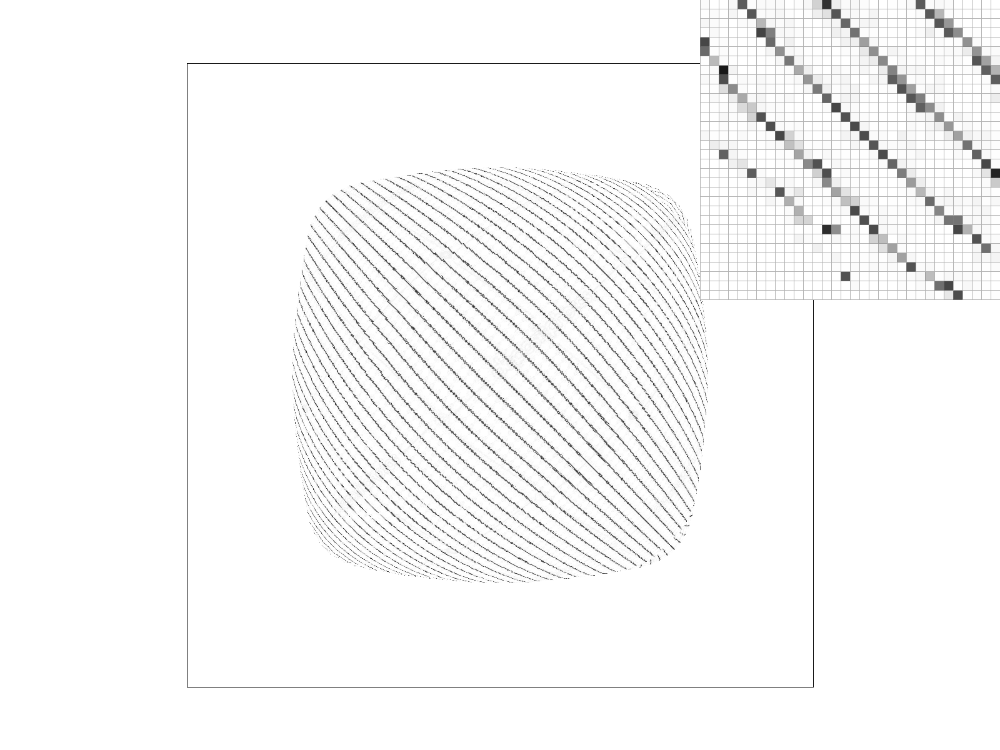
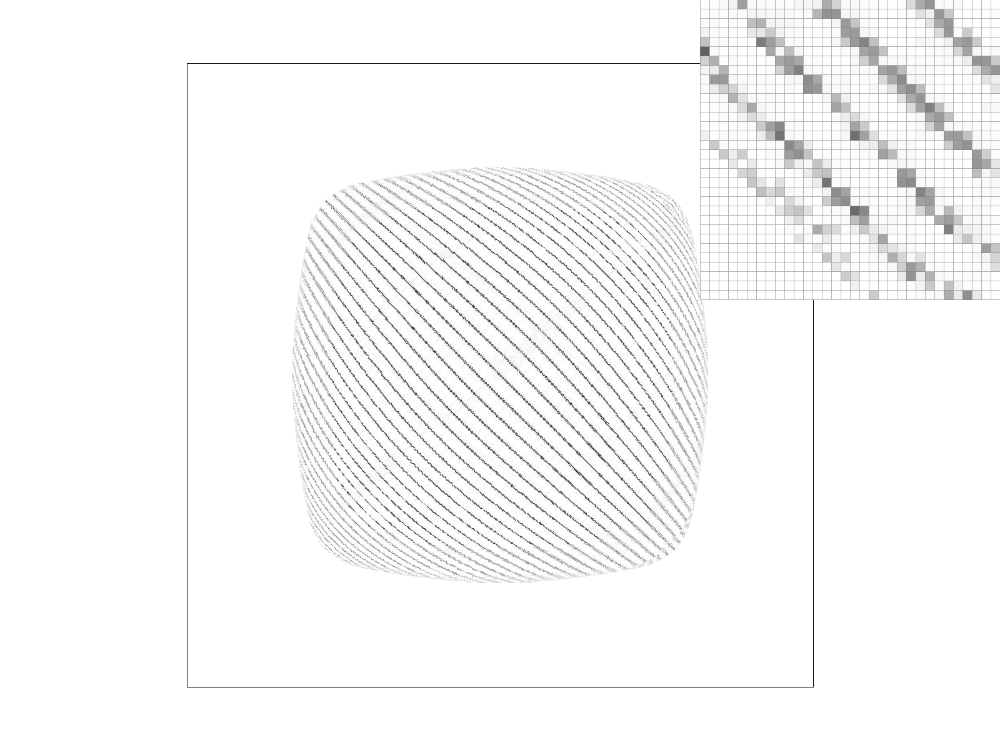
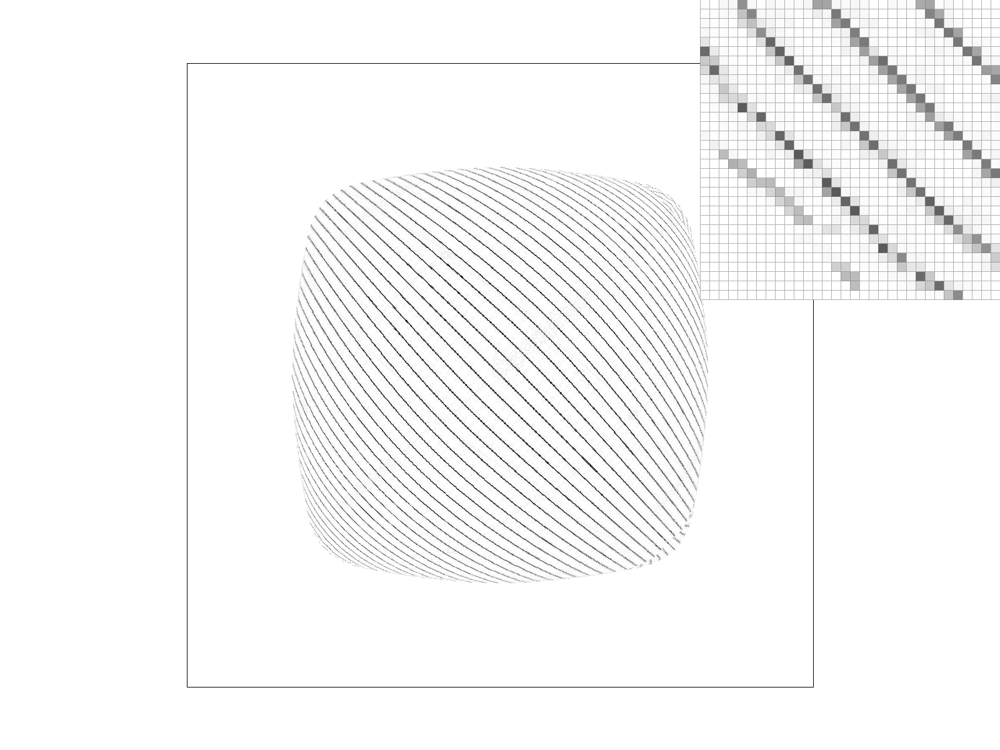

Overview
In this project, we learned to build out techniques ranging from basic polygon/triangle rasterization to texture mapping. We began by rasterizing triangles – determining which pixels on the screen should be filled when given the color and position of three coordinates of a triangle. This process involved sampling pixels for the three line tests associated with the edges of the triangle; it was interesting to learn how we take triangles that are represented in continuous space, and translate them into pixels that are discrete. However, this process of rasterization was imperfect, as pixels were either fully colored with the target color or left blank, leading to sharp changes and high frequencies that produced jagged edges. To fix this, we learned to antialias using supersampling, where we sampled multiple times per pixel. We rasterized using a larger sample buffer to account for more pixel samples, as if we simply had a higher resolution frame. Then, we averaged the pixel samples and used this average to write to the frame buffer. This cut out some high frequencies by smoothing the color transition between the background and our triangle; as a result, we had smoother edges. We also built out transform functions, where matrices altered the characteristics of the images. It was interesting to build these matrices out, some were not obvious despite coming from very familiar ideas in trigonometry/geometry. We implemented color interpolation, which was a starting point for using barycentric coordinates and interpolation. Then, to increase antialiasing we implemented nearest neighbor pixel sampling, and bilinear pixel sampling. Lastly we implemented texture mapping to map a texture onto a pixel screen that represents 3D space. To antialias we implemented nearest level sampling and bilinear level sampling, which calculates mipmap level per pixel, and samples at a lower resolution in places that are best suited for it.
Section I: Rasterization
Part 1: Rasterizing single-color triangles
To rasterize a triangle, we want to determine if a pixel is inside the triangle and should be colored. In order to determine if the pixel is inside the triangle, we think of each side of the triangle as a line. For each line, we can compute a line equation that tells us if a pixel is on the correct side of the line (the side facing the other part of the triangle). When the pixel is on the correct side, the line equation is positive if the points are given counterclockwise; it’s negative if the points are given clockwise. The line equation itself is the dot product of the vector that defines the line and its corresponding normal vector. If the pixel satisfies the conditions mentioned above for all three line equations, it must be in the triangle. If it is on the edge, and the edge is horizontal and on the top, or a left edge (the rule we decided to go with), then it is also colored. In summary, to rasterize, we sample each pixel using the three line equations to determine if it should be drawn.
Our algorithm matches the one that uses a bounding box around the triangle (we use a bounding box). We calculate the minimum and maximum x/y values of the triangle vertices and sample each pixel that lies within those bounds. In the end, we are able to draw triangles, but with jagged edges.
Part 2: Antialiasing triangles
Our supersampling algorithm consists of two main parts: rasterizing and downsampling. The rasterizing occurs in the rasterize_triangle method that we built in task 1. Not much changed from the previous rasterizing algorithm. However, that method takes in coordinates that are relative to the frame buffer. In order to properly rasterize over the larger sample buffer, we scaled the coordinates by the square root of the sample rate. We then rasterized like we did before, as if we were rasterizing over a higher resolution. The second part of our algorithm was downsampling. This occurred in the resolve_to_framebuffer method. For each pixel in the frame buffer, we accessed the samples in the sample buffer and averaged their RGB values. We used this average to color the pixel that actually gets displayed in the frame. There were other small changes to the pipeline as well, such as a fix to rasterize_point that made all samples of the pixels the same color (supersampling would lighten the color of lines before this fix). We also scaled coordinates in fill_pixel by the square root of the sample rate to adjust to the higher resolution sample buffer. Whenever set_sample_rate or set_framebuffer_target were called, we also made sure that the sample buffer was resized to the original resolution times the sample rate. In terms of data structures, we used the sample buffer and frame buffer arrays. At a higher level, this process of supersampling is useful because it eliminates artifacts that are caused by high frequencies; in the context of our triangles, these artifacts manifest as jagged edges. Supersampling smooths edges by using the average color of the samples; the transition between the white background and colorful triangles is more gradual. Supersampling alleviates aliasing by increasing the sample rate / size of sample buffer and reflecting those changes onto the frame buffer. The effects can be seen in the screenshots below.
|

|
|
|
|
Part 3: Transforms
In this image, we used transforms to make the cubeman wave with his left hand (from our perspective) up and have his right hand down. This was achieved through a rotation then translation of the second rectangle on each arm. We removed the initial translation that defined the position of this rectangle so that we rotated around the relative origin, and translated the rectangle from the origin. The order of transforms was important in obtaining the cubeman that we wanted.
Section II: Sampling
Part 4: Barycentric coordinates
Barycentric coordinates are composed of 3 different ratios (which add up to 1) that describe how a point sits in relation to the 3 vertices. The coordinates for this point are not needed to be saved, because no matter where the triangle moves, the point can be recalculated if given the barycentric coordinates. For this problem we use barycentric coordinates to calculate color values based on the cartesian coordinates. The three vertices are represented by Red, Green or Blue, and we use the barycentric coordinates we calculate from a cartesian coordinate to calculate the corresponding color value. In the example below the vertices in bottom left, top, and bottom right correspond to Red, Green, and Blue. And we can see the triangle blend seamlessly as it goes between the colors because each pixel is colored based on distance to each vertice. For example, as points get closer to the bottom left, they get more red. But, they get more green, and less red as they move towards the green vertice. Also, right in the middle of the red and blue vertice, we see a purple color.
|

|

|
Part 5: "Pixel sampling" for texture mapping
Pixel sampling for texture mapping is the process of trying to figure out what color value to attribute to a pixel based on the texture we are trying to map to the pixels. We figure out what the corresponding texel coordinates are, based on the pixel’s barycentric coordinate calculations. We calculate this within rasterize_textured_triangle(), and put it into our sample function. The texel coordinate (corresponding to the pixel) will usually not land on an existing texture value, so we have to guess/sample what that value would be based on the texture space using “nearest sample” or “bilinear sample”. In the Texture::sample() function, we have a variable- psm- which lets the function know which sample function to use. Once we get an estimated value from either sampling method, we can use that color value to attribute it to the pixel. In nearest pixel sampling, we decide the color of the pixel based on the nearest texture value sample location, and assign that value to the pixel. To do this in the function, we take the texel coordinates and round them to an “int” which gets it to the nearest texture value. In Bilinear, we find the 4 nearest texture values, and take a weighted combination of all their color values using linear interpolation which gives us a value for the texel coordinate. To get the nearest 4 texture values, We take the texel coordinate, and floor() it and ceil() it into 4 different values which become the coordinates of the 4 nearest neighbors. Then, we lerp twice in the horizontal direction, then take the 2 outputs, and lerp in the vertical direction to get the color value.
|

|

|
|
|
|
Part 6: "Level sampling" with mipmaps for texture mapping
When mapping a texture to a 3D object, there are places that are further away which can afford to have decreased resolution, and need it to avoid aliasing with the extreme cost of supersample. This is where level sampling comes in to filter high frequencies and sample at a lower resolution in places that are best suited for it- like locations further away in the 3D object. The 0th level would be full resolution, the 1st level would be half resolution (if 128x128 was full resolution, then level 1 would be 64x64), and each level after would keep halving the resolution. Level sampling estimates/figures out a mipmap level for each pixel before sampling the pixel.
Level Sampling Methods:
- Zero Level: Uses 0th level full resolution for pixel sampling.
- Nearest Level: Nearest level sampling finds the nearest mipmap level, and uses this level for the pixel sampling. In our get_level function, we find the true mipmap level and round it to the nearest integer. Then we pixel sample based on that level.
- Bilinear Level: In this level sampling, we interpolate between the two closest levels- which is the calculated mipmap level rounded up and down. We pixel sample on both of those levels, and interpolate between the results of those getting the interpolated color value between the two levels.
We have a helper function get_level() that calculates the level depending on the “lsm” that indicates which sampling method. Level is calculated by first finding the max distance between the pixel position and 1 unit pixel distance in the y direction and x direction. Then taking the base 2 log of that distance. We also clamp the levels between 0 and max size of the mipmap where if the level goes beyond these bounds, we set it to 0 or max level depending on which side our level exceeds.
|

|

|
|
|

|
|

|
|
Tradeoffs between speed, memory usage, and antialiasing power:
- Pixel Sampling: Nearest pixel sampling is the fastest because we just have to round the texel coordinate to the nearest value while bilinear pixel sampling is slower because we calculate barycentric coordinates and interpolate the 4 closest neighbor texture values. Nearest pixel sampling is bad for high frequency images, where bilinear sampling’s antialiasing makes edges smoother. Memory usage between pixel sampling is about the same.
- Level Sampling: Zero level sampling is low memory usage only using one level. Nearest level sampling is slower because of the need to estimate mipmap levels for each pixel. It also uses more memory because it needs to store the downsampled texture data for each pixel. Nearest level also smoothens the image and reduces aliasing. Bilinear level sampling has the same memory usage as nearest level sampling, but is slower due to the calculations of the addition of interpolating between two pixel sampling calculations for each pixel. This does even better for reducing aliasing as it calculates the exact mipmap level needed for each pixel.
- Supersampling: With higher number of sampling per pixel it reduces aliasing, but at the expense of memory and speed because there must be a larger sample buffer which requires more memory, and each value in the sample buffer is sampled so more computations.
Section III: Art Competition
If you are not participating in the optional art competition, don't worry about this section!